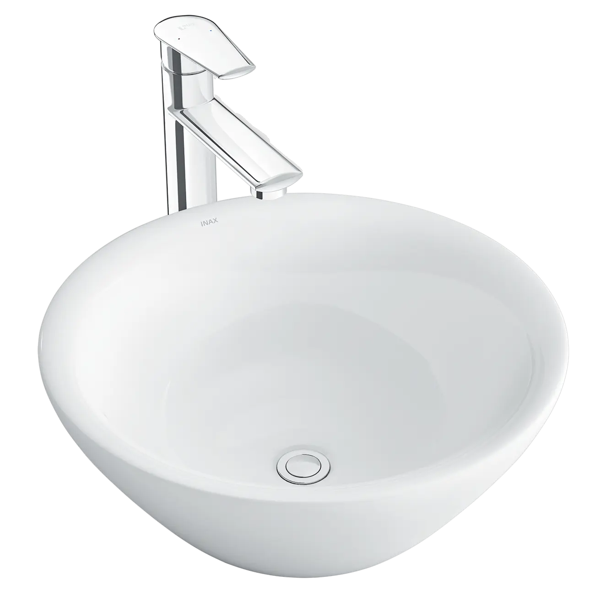
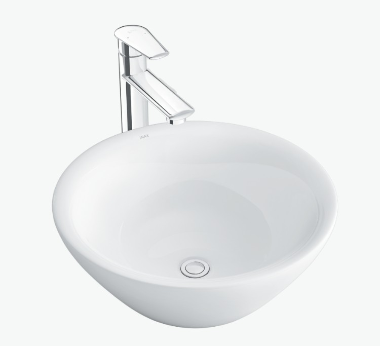
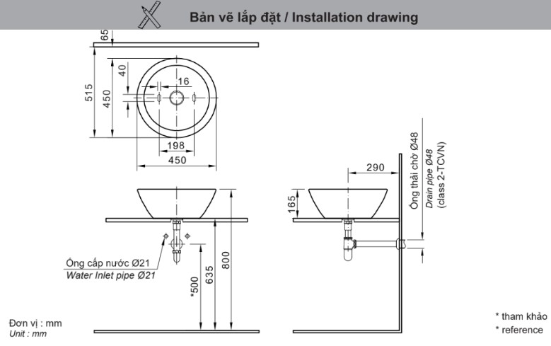

Chậu rửa đặt bàn L-445V là mẫu chậu rửa mặt đặt bàn đá đẹp lý tưởng, thể hiện sự thanh nhã và tinh tế trong thiết kế. Với kiểu dáng nhỏ gọn nhưng sang trọng, L-445V là lựa chọn hoàn hảo cho các không gian phòng tắm hiện đại, mang lại cảm giác sạch sẽ và dễ dàng vệ sinh nhờ chất liệu sứ cao cấp chuẩn Nhật.Thiết kế chậu rửa đặt bàn L-445V nhỏ gọn, sang trọngThiết kế dạng đặt nổi trên mặt bàn đá lavabo, tạo điểm nhấn nghệ thuật và cảm giác thanh lịch, cao cấp cho khu vực lavabo.Với kích thước cân đối 450 x 165 x 450 (mm), chậu L-445V phù hợp với cả những phòng tắm có diện tích hạn chế, tối ưu hóa không gian sử dụng.Chậu được thiết kế kèm lỗ xả tràn, giúp ngăn chặn tình trạng nước tràn ra ngoài khi người dùng quên khóa vòi, tăng sự an toàn và tiện ích.Các tính năng nổi bật của L-445VChất liệu sứ cao cấp chuẩn Nhật BảnChậu được chế tạo từ chất liệu sứ cao cấp chuẩn Nhật, đảm bảo độ bền vượt trội, chống nứt vỡ và giữ được hình dáng nguyên vẹn qua thời gian.Bề mặt men sứ trắng sạch, trơn bóngBề mặt chậu được phủ men sứ trắng sạch, trơn bóng, có khả năng chống bám bẩn vượt trội. Đặc tính này giúp việc vệ sinh chậu trở nên dễ dàng hơn bao giờ hết, giữ cho chậu luôn sáng đẹp.Chậu rửa đặt bàn L-445V có thể sử dụng linh hoạt với nhiều dòng vòi lavabo thân cao đặt bàn khác nhau, bao gồm: LFV-1402SH, LFV-112SH, LFV-2012SH, LFV-502SH, LFV-5012SH.Video giới thiệu chậu rửa INAXBản vẽ lắp đặt chậu rửa đặt bàn L-445VXem hướng dẫn lắp đặt: https://drive.google.com/file/d/1_sG9VuSU1WPOPJb2YaEXUFbvqG-DZGqz/viewThông số kỹ thuậtChất liệuSứ cao cấpKiểu dángĐặt bàn sang trọngKích thước450 x 165 x 450 (mm)Thiết kếDáng oval, cổ điển, thanh nhã, sang trọngThương hiệuINAXTính năng- Sứ cao cấp chuẩn Nhật, trắng sạch, trơn bóng, dễ dàng vệ sinh - Lỗ xả tràn tiện lợiMàu sắcTrắngKhác- Dễ dàng kết hợp với vòi lavabo thân cao: LFV-112SH, LFV-2012SH, LFV-502SH và LFV-5012SH - Hotline tư vấn và bảo hành: 18006633
Chậu rửa đặt bàn L-445V
Chậu rửa thương hiệu INAX.
Đã cập nhật danh sách yêu thích.
DANH MỤC: Chậu rửa
MÃ SẢN PHẨM: L-445V
DEPTH: 450mm
HEIGHT: 165mm
WIDTH: 450mm
Chậu rửa đặt bàn L-445V là mẫu chậu rửa mặt đặt bàn đá đẹp lý tưởng, thể hiện sự thanh nhã và tinh tế trong thiết kế. Với kiểu dáng nhỏ gọn nhưng sang trọng, L-445V là lựa chọn hoàn hảo cho các không gian phòng tắm hiện đại, mang lại cảm giác sạch sẽ và dễ dàng vệ sinh nhờ chất liệu sứ cao cấp chuẩn Nhật.Thiết kế chậu rửa đặt bàn L-445V nhỏ gọn, sang trọngThiết kế dạng đặt nổi trên mặt bàn đá lavabo, tạo điểm nhấn nghệ thuật và cảm giác thanh lịch, cao cấp cho khu vực lavabo.Với kích thước cân đối 450 x 165 x 450 (mm), chậu L-445V phù hợp với cả những phòng tắm có diện tích hạn chế, tối ưu hóa không gian sử dụng.Chậu được thiết kế kèm lỗ xả tràn, giúp ngăn chặn tình trạng nước tràn ra ngoài khi người dùng quên khóa vòi, tăng sự an toàn và tiện ích.Các tính năng nổi bật của L-445VChất liệu sứ cao cấp chuẩn Nhật BảnChậu được chế tạo từ chất liệu sứ cao cấp chuẩn Nhật, đảm bảo độ bền vượt trội, chống nứt vỡ và giữ được hình dáng nguyên vẹn qua thời gian.Bề mặt men sứ trắng sạch, trơn bóngBề mặt chậu được phủ men sứ trắng sạch, trơn bóng, có khả năng chống bám bẩn vượt trội. Đặc tính này giúp việc vệ sinh chậu trở nên dễ dàng hơn bao giờ hết, giữ cho chậu luôn sáng đẹp.Chậu rửa đặt bàn L-445V có thể sử dụng linh hoạt với nhiều dòng vòi lavabo thân cao đặt bàn khác nhau, bao gồm: LFV-1402SH, LFV-112SH, LFV-2012SH, LFV-502SH, LFV-5012SH.Video giới thiệu chậu rửa INAXBản vẽ lắp đặt chậu rửa đặt bàn L-445VXem hướng dẫn lắp đặt: https://drive.google.com/file/d/1_sG9VuSU1WPOPJb2YaEXUFbvqG-DZGqz/viewThông số kỹ thuậtChất liệuSứ cao cấpKiểu dángĐặt bàn sang trọngKích thước450 x 165 x 450 (mm)Thiết kếDáng oval, cổ điển, thanh nhã, sang trọngThương hiệuINAXTính năng- Sứ cao cấp chuẩn Nhật, trắng sạch, trơn bóng, dễ dàng vệ sinh - Lỗ xả tràn tiện lợiMàu sắcTrắngKhác- Dễ dàng kết hợp với vòi lavabo thân cao: LFV-112SH, LFV-2012SH, LFV-502SH và LFV-5012SH - Hotline tư vấn và bảo hành: 18006633
DANH MỤC: Chậu rửa
MÃ SẢN PHẨM: L-445V
DEPTH: 450mm
HEIGHT: 165mm
WIDTH: 450mm